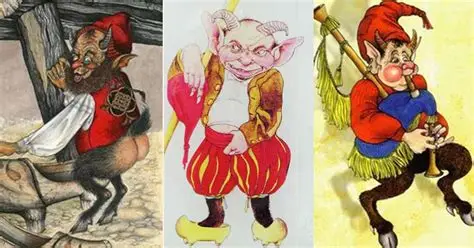
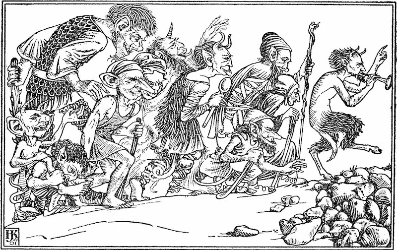

Algo se mueve
en la casa.
avistamientos modernos · patrones inquietantes
«Duende» significa, literalmente, dueño de casa.
- Del castellano antiguo «duen de casa».
- No es un visitante: es el que se ha quedado.
- Aparece en literatura ya en el siglo XVI.
- La versión Disney es una traducción muy reciente.
«Duen de casa» → contracción → «dueño» de la casa que tú creías que era tuya.


El del gorru colorau.
- Asturias y Galicia. Doméstico.
- Pequeño. Gorro y blusa rojos.
- Mano izquierda agujereada: por eso se le encargan tareas imposibles.
- Si te mudas, te sigue.
- «Habéis dejado la lámpara — pero la traigo yo».

Llega cantando. Se queda trenzando.
- Hombre diminuto, vestido de negro, sombrero enorme.
- Cuatro mulas atadas frente a la casa elegida.
- Serenata con guitarra de plata a jóvenes de cabello largo.
- De noche, entra y hace trenzas imposibles de deshacer.
- La víctima deja de comer. De dormir. La única cura: cortar el pelo.
Pueblos que nunca se conocieron
describen al
mismo ser.
5
rasgos repetidos
Pequeño · gorro o sombrero · doméstico · ruidoso · nocturno.
∞
posibles culturas
Asturias, Galicia, Alemania, Escocia, Islandia, Japón, Guatemala, El Salvador, Honduras…
2
explicaciones
(a) Coincidencia narrativa universal. (b) Vieron lo mismo. Elegid cuál os incomoda más.
Mismo arquetipo · distinta moral




Mismo duende.
Otra moral.
- Espíritu doméstico con forma de niño/a de 5–6 años.
- Habita casas antiguas del norte de Japón.
- Pisadas, marcas de manos, objetos que se mueven.
- Su presencia trae fortuna. Si se va, la familia se arruina.
- La misma criatura que el Trasgu — solo que aquí quieres que se quede.
¿Te ha desaparecido algo de casa?
Pulsa todas las que te hayan pasado. Sin trampa.

Dicen que los niños
ven cosas que nosotros
ya no
vemos.
El bebé se ríe mirando al techo. La niña saluda a la esquina. El amigo invisible tiene nombre, y come. La madre ya no pregunta.
— RELATO DOMÉSTICO RECURRENTE · MUCHAS CULTURAS · MUCHOS SIGLOS
- Psicología infantil: juego simbólico, desarrollo cognitivo, pareidolia.
- Folklore: todavía pueden ver a los que llevan más tiempo aquí.
- Las dos explicaciones funcionan. Las dos son inquietantes a su manera.

El duende del árbol.
- 14 marzo 2006. Crichton, Mobile, Alabama.
- Vecinos se concentran bajo un árbol. Aseguran ver una figura pequeña.
- NBC local manda al reportero. «La cosa se nos fue de las manos».
- Vídeo a YouTube en San Patricio. +28 millones de visualizaciones.
- Años después: ¿broma de un vecino? ¿O vieron algo antes de las cámaras?

Cámara de seguridad.
Finca rural.
- Mayo 2024. Afueras de Monterrey, Nuevo León.
- Grabación nocturna: figura humanoide cruza el patio.
- Propietario reporta semanas previas de ruidos y objetos movidos.
- Explicaciones racionales: mono, niño, artefacto de compresión.
- Explicación popular en TikTok: otra.
¿Qué ves?
en acción.
Ningún niño.
Tres preguntas
que siempre hay que hacer.
01
Testimonio.
¿Cuántos testigos? ¿Independientes? ¿Estaban juntos cuando ocurrió, o lo cuentan después? Un testigo solo no es nada. Veinte testigos no coordinados ya es algo.
02
Contexto físico.
Luz, sombras, viento, alcohol, falta de sueño, animales en la zona, cámara mala. La pareidolia se dispara con poca luz y la mente cansada.
03
Patrón folklórico.
¿Repite rasgos antiguos —pequeño, gorro, ruidos, objetos? Si encaja con un patrón de hace siglos, no prueba que existan: prueba que algo nos hace contar siempre la misma historia.
Patrón cruzado · Asturias × Guatemala × Alemania × Japón × Alabama
¿O memoria compartida?
Si los inventamos siempre iguales,
¿por qué los
inventamos?
A.
Cerebro narrativo común.
Misma especie, mismas historias. Llegamos al mismo personaje porque tenemos el mismo software mental.
B.
Memoria cultural antigua.
Hubo algo pequeño con lo que convivimos hace milenios. Lo que queda es el eco —deformado, mítico, persistente.
C.
Siguen aquí.
Y lo de la lámpara, la trenza en el caballo y la figura entre las ramas no es metáfora.
Las tres son inquietantes. Elegid la vuestra antes de irse a dormir.

según el folklore,
no es buena idea.